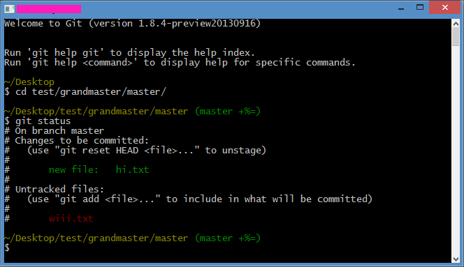

GitHub Pages for projects
Simple steps to create GitHub Pages for projects/per repo (not user nor organization) plus some other stuff.
The steps are for CLI and for GitHub for Windows (TortoiseGit is "similar" to Git CLI) and Git beginners oriented, who search for easiness and not so much fuss. However, if you're confortable using SVN, you can use it (see clients in GitHub).
Abbreviations and vocabulary:
- git CLI
- Git used in a terminal/command line.
- GW
- GitHub for Windows.
- Tortoise
- TortoiseGit.
- Server
- Where things are "hosted" (like GitHub). This doesn't exist in Git, but this is how beginners can understand better (remote repository).
- "Central server" if you're comming from SVN.
- repo
- To make things easier, take "repo" like "principal or remote repository" or "server" (see definition).
- origin
- This is how you name the original "remote repository" and by convention the 'primary' cetralized repository.
- c-p
commitfollowed bypush
Programs for Windows
In the beginning, having Git in Windows was hard (because it was created by and for Linux) but now there are many options. Usually, if you are only going to use GitHub, GW is recommended. However, if you want to use Git for other things (like creating "servers" locally to play or test) I recommend TortoiseGit + msysgit (git CLI) instead:
- you can use it for other things and not only for GitHub ("reads" the
github://protocol) - you don't have to mess around with the PATH if you want to use git CLI (it installs in
%appdata%and you can't only includebin\) - msysgit comes with "git Bash"; a cool CLI with colors that shows in which
branchyou're in; what is more, you can customize it with.bashrc.

Create repository
In GitHub, create a repository with the desired name. You can log in and go to https://github.com/repositories/new o clicking in the "book".
"Activate" GitHub Pages
It automatically activates when you create a branch called gh-pages.
From web click in branch master; in GW click in master at the top. Search for gh-pages and press create branch. With CLI would be (previously cloned, look below):
$ git checkout --orphan gh-pages # branch local
Info
--orphan creates a branch separated from the rest of the repo (without parents). First, the branch is created locally and then sent to origin (steps below).
Get it in desktop (to work with it)
From GitHub click in Clone in desktop (that GW or Tortoise will recieve) or from CLI:
$ git clone https://github.com/user/nice_repo.git
Prepare gh-pages branch
Switch to gh-pages. In CLI, if you used the above command (git checkout --orphan gh-pages) it switches automatically, otherwise git checkout -b gh-pages to switch and create a local branch called "gh-pages".
Info
When switching branches, Windows Explorer "refreshes" the folder with the content of the selected branch.
Delete all the files (because they're from master and we don't want them) and we c-p.
$ git rm -rf . # delete everything $ git commit -m "Initiating gh-pages" $ git push -u origin gh-pages # send branch to origin
gh-pages as default and delete master
This is optional, depends on your workflow or usage idea. If you're only going to use gh-pages, you can use it as default and delete the master branch.
To make it default (and not use master), in GitHub, go to settings > (settings >) Default branch and select gh-pages.
To delete master you must have gh-pages as default. Then, go to the branches listing and click in Delete branch. With CLI:
$ git branch -d master # delete local $ git push origin :master # delete from repo
It's alive! (Testing file and upload)
Create an index.html, add it and c-p.
$ git add . # adds all $ git commit -am "First commit to pages" $ git push origin gh-pages
(-a is an abbreviation of add)
Wait a couple of minutes and check if index is uploaded in: http://user.github.io/projectName/
Custom domain
As you probably don't want to enter to http://user.github.io/projectName/ because is too long or it's kind of unprofessional, GitHub allows you to assign a custom domain/subdomain to it.
You only need to create a CNAME file which has the domain/subdomain that you want to use, in the root of gh-pages and change the DNS in host/registrar:
-
With a root domain (www.example.com): create a new
A recordwith the IP to 204.232.175.78. -
With a subdomain (sub.example.com): create a
CNAME recordthat points to GitHub user subdomain (user.github.io). This allows the DNS to adjust automatically to GitHub's IP; you can use aA recordbut it won't update automatically.
404 pages! (Everyone loves error pages)
It's easy too: create a 404.html in gh-pages's root and done (don't forget to add and c-p).
Changes
- Rewritten to be more explanatory.
How to comment
- Tweet with an URL to this post (
http://blog.quinzi.com.ar/gh-pages-project/) - Write a post linking here and send me a Webmention.
- Commenting with disqus